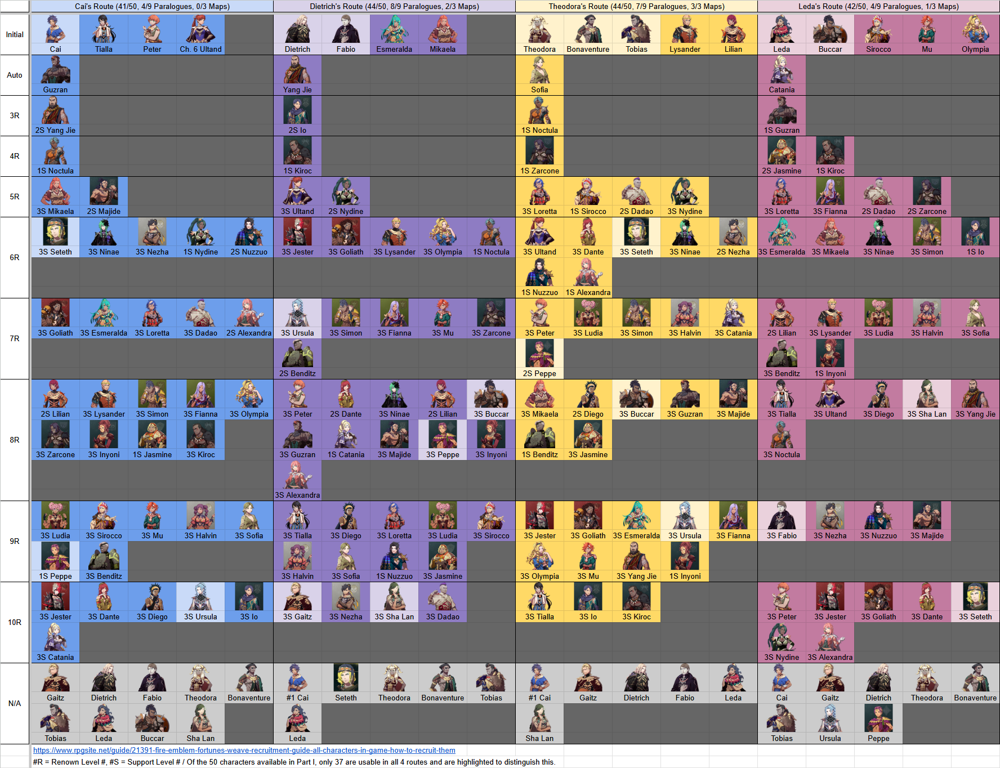

FORTUNE'S WEAVE · FIELD GUIDE
萬縷千絲
四線角色・職業速查
先選路線，再找你的隊員。從招募門檻、武器專長與成長短板，快速決定培養方向；職業卡可查技能效果和轉職加成。
角色資料載入中職業資料載入中繁體中文・不顯示日文核對日期 2026.09.22
資料範圍：原招募圖50人保留四線第一部門檻、tier及培養建議；Redfreshet逐頁補上完整63人，包括13名追加／隱藏角色。追加角色的第二、三部加入條件另列，不混入第一部41／44／44／42統計。
每張角色卡可展開查看能力成長傾向、技能專長與初始級別、角色習得技能及條件、喜愛禮物、價格與獲得位置。個人技能／血印仍保留先前指定的Entertainment14資料作對照。
角色弱點：只指來源明確標為不擅長提升的武器／技能。未列為擅長不等於弱項；來源沒有標示時維持「未提供」。
Lord 是主角獨立分類，並非高於S級。追加角色尚未重新評tier或推薦最終職業，會明確標示「追加／未整理」。
01 ／ 角色速查
此線第一部可用角色
S / A 優先培養
37四線皆可招募
R = Renown 聲望等級；S = Support 支援等級（例 R7S3 = 聲望7／支援3）。N/A 僅指附圖第一部不可用。＊目標代表編者補充／調整建議。
02 ／ 職業技能與影響
技能・精通・轉職・成長三種加成要分開：固定能力補正只在當前職業套用；職業成長是升級機率的百分點修正；職業技能與精通獎勵各有自己的取得條件。
本區依Redfreshet完整60職業資料顯示基礎、初級、中級、上級、最高級與神將。轉職要求保留「全部＋任一」的AND／OR關係，並列推薦等級、名聲、試驗手形及特殊解鎖條件。
03 ／ 武器與培養判斷
角色卡的「武器強項」指熟練度專長及能力適配，不代表遊戲的武器相剋表。以下為根據資料的編者建議；未核實武器三角、具名武器排行或最終傷害公式。
| 方向 | 值得利用 | 需要補的地方 | 常用發展目標 |
|---|---|---|---|
| 高速劍 | 速度／技巧與持劍必殺 | 迴避是機率；高速度不能保證力量足夠 | Shido |
| 弓 | Sniper 提供命中、速度與技巧；騎弓兼顧機動 | 力量低的弓手需補傷害；別把戰技射程套到普攻 | Sniper / Forest Knight |
| 斧／拳 | Warrior 增力量，持斧／拳命中+5 | 低技巧角色優先補命中；追擊看實際攻速 | Warrior |
| 槍／騎乘 | 機動、上下坐騎、額外戰技欄位 | Bardinger 的劍／槍次要門檻與騎術要事先培養 | Bardinger / Dragoon |
| 重甲 | Dreadnought 防禦加成+9，防禦成長+30百分點 | 移動4、技巧-5／成長-10、魔防-1／成長-10；法術及命中是代價 | Dreadnought |
| 白魔法 | Bishop 次數×2，治療+10HP | 物防成長-10；治療職不能當可靠物理前排 | Bishop |
| 黑魔法 | Ovate 魔力+4、速度+4、魔法命中+5 | 物防成長-10；高魔力仍要有相應黑魔法熟練度 | Ovate / Caladrius |
04 ／ 資料來源與核實邊界
本頁來源與更新時間
- Redfreshet 角色資料庫：2026-09-22逐頁擷取63/63人；提供能力傾向、技能特性、技能效果與要求、禮物反應／價格／獲得位置，以及各路線加入條件。原招募圖外13人（包括Kiryk等後期／隱藏角色）標為追加／隱藏角色。
- Redfreshet 職業資料庫：2026-09-22逐頁擷取60/60職；提供轉職條件樹、等級／名聲／試驗手形、固定能力、成長修正、職業技能與精通獎勵。
- Entertainment14角色整理：保留既有個人技能與血印資料作對照；缺欄不推斷為沒有。
- Game8 tier資料：原50人的tier與培養建議來源；新增13人未擅自套用tier。
- 第一部四線招募門檻依你提供的圖片轉錄，維持41／44／44／42及四線交集37人；Redfreshet的第二、三部加入資料另列。
缺失與使用限制
- Redfreshet的63個角色頁均把初始職業顯示為「—」，本站保留為未收錄。
- 部分角色技能的習得條件在來源標為未收錄；本站不猜測等級。
- 部分禮物有角色反應但未列價格或獲得位置，會顯示「來源未列」。
- 職業來源的「—」數值保留為未知，不當成0；轉職要求的任一／全部關係按來源條件樹呈現。
- 名稱採繁中速查譯名；角色保留英文名作辨識，不顯示日文原名。技能效果為精簡意譯，實際判定以遊戲內文字為準。
展開你提供的四線招募原圖（可橫向滑動）
